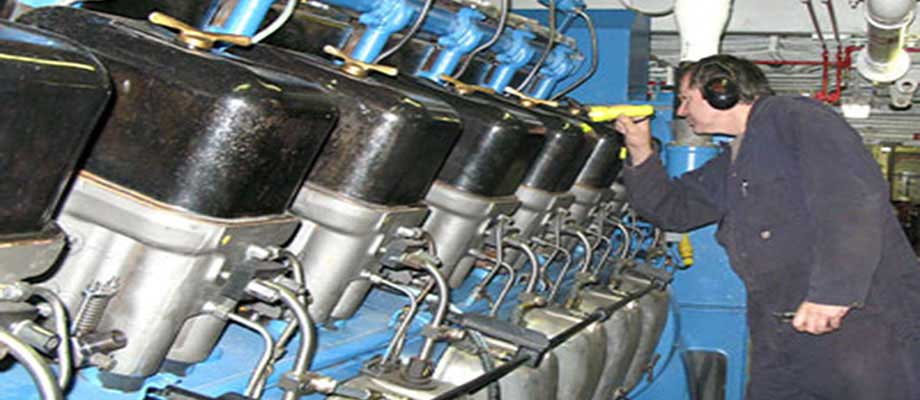

Корабни механици
На тази страница можете да намерите готови тестове за самоподготовка за изпитите на Изпълнителна Агенция "Морска Администрация" (ИАМА) за правоспособност "Вахтен механик на кораб" (Оперативно ниво) и за правоспособност "Главен или втори механик на кораб" (Управленско ниво).
Тествете покриват следните фунции:
- Функция "Електрообзавеждане, електронна апаратура и системи за управление"
- Функция "Морско инженерство"
- Функция "Техническо поддържане и ремонт"
- Функция "Управление и експлоатацията на кораба и грижа за лицата на борда"
Забележка
В представените тестове са включение въпросите от страницата на Изпълнителна Агенция "Морска Администрация". Вариант - 18.08.2015 г.